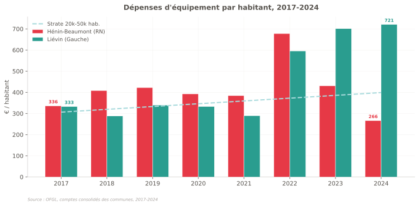
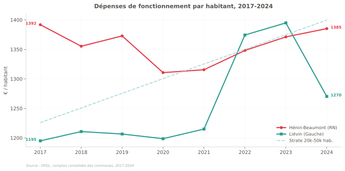
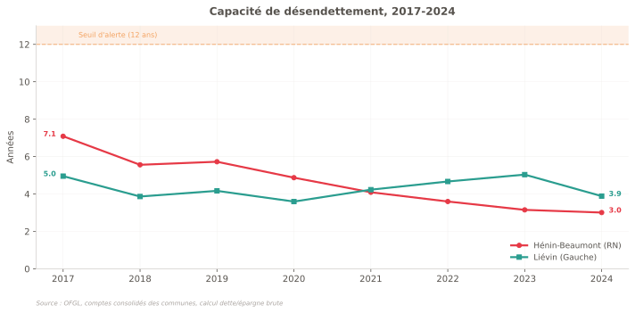
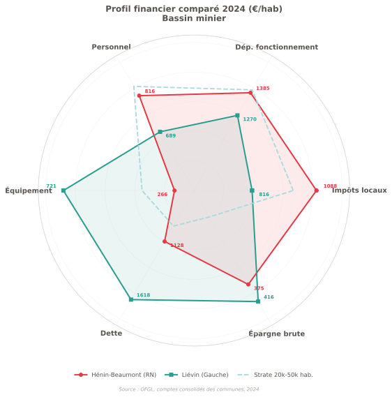
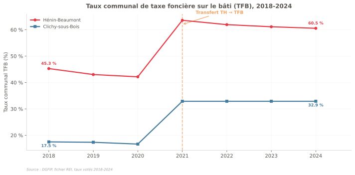
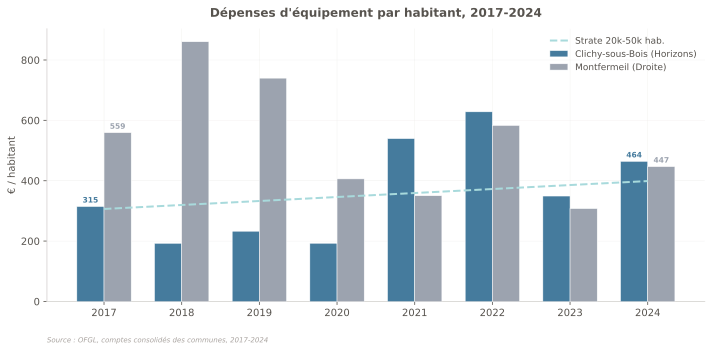
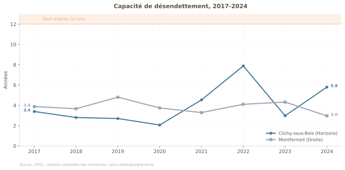
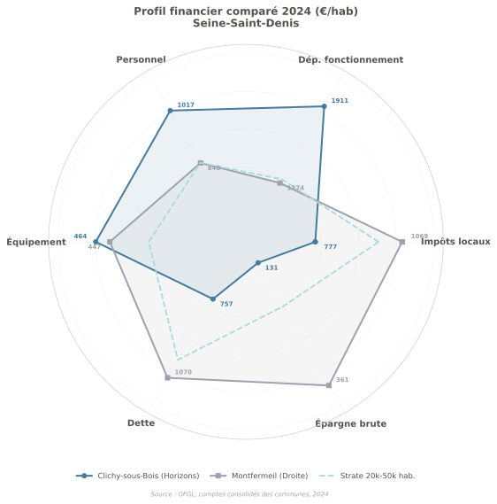
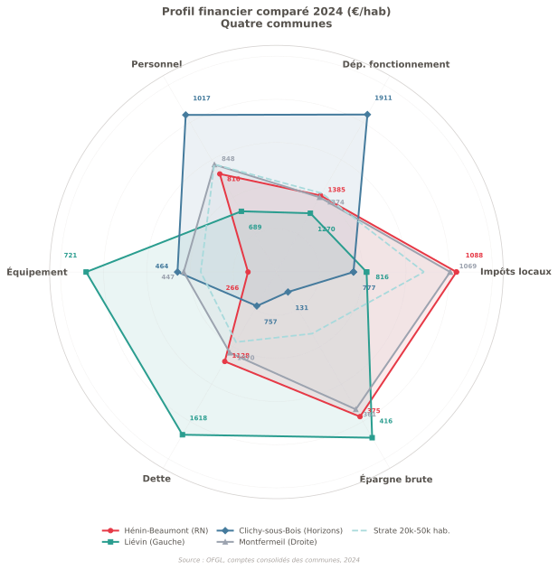
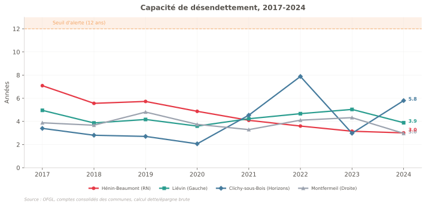

Ce qu'il faut retenir
Données 2024, euros/hab (euros courants) sauf mention contraire. "Subventions captées" = agrégat OFGL "Subventions reçues et participations". Article publié le 17 mars 2026. Sources : OFGL 2017-2024, DGFIP REI 2018-2024. Données téléchargeables en bas de page.
Contexte. Dans la partie 1, on a montré que les indicateurs macro (pauvreté, chômage, revenu) ne bougent pas, quelle que soit la couleur politique d'une mairie. La partie 2 pose la question suivante : si les indicateurs macro ne changent pas, où se voient les choix politiques ? Réponse : dans les comptes administratifs. C'est là que les promesses deviennent des lignes budgétaires.
Pourquoi quatre communes, pas deux
La partie 1 comparait Hénin-Beaumont (Pas-de-Calais, RN) et Clichy-sous-Bois (Seine-Saint-Denis, Horizons). On nous a fait une objection légitime : les deux villes sont trop différentes. Banlieue parisienne contre bassin minier. Pour corriger cela, on ajoute une commune miroir à chacune. Même bassin économique, mêmes difficultés, mais une gestion politique différente. Si la différence persiste entre communes voisines qui partagent le même contexte, c'est que la variable politique joue réellement.
Avertissement méthodologique. Les comptes sont les comptes consolidés OFGL (budget principal + budgets annexes), de 2017 à 2024. Les montants sont en euros courants. L'inflation cumulée sur la période est d'environ 20 %. Le transfert TH vers TFB de 2021 crée une rupture de série sur les taux d'imposition. Les données brutes sont téléchargeables en bas de page.[1]
Bassin minier : Hénin-Beaumont vs Liévin
Même Pas-de-Calais, mêmes difficultés, même histoire. 8 km les séparent.
Hénin-Beaumont
- Maire
- Steeve Briois (RN) depuis 2014
- Réélu le 15/03/2026
- 78 %, 1er tour, 3e mandat
- Population
- 26 396 hab.
- Pauvreté
- 24 % (Filosofi 2021)
- Chômage
- 17,8 % (RP 2022)
- EPCI
- CA Hénin-Carvin
- Transport structurant
- Aucun
- ANRU
- Non
- Avant le RN
- Dalongeville (PS), condamné pour détournements (2013)
Liévin
- Maire
- Laurent Duporge (PS) 2013-2026
- Municipales 15/03/2026
- Duporge ne se représente pas. Darras (PS) 44 %, Paiva (RN) 38 %. 2e tour le 22 mars.
- Population
- 30 497 hab.
- Pauvreté
- ~27 % (Filosofi 2021)
- Chômage
- ~19 % (RP 2022)
- EPCI
- CA Lens-Liévin
- Transport structurant
- Gare TER Lens (noeud ferroviaire)
- ANRU
- Oui (quartiers nord)
- Avant Duporge
- Kucheida (PS), condamné pour abus de biens sociaux (2015)
Même point de départ. Les deux communes ont hérité de maires PS condamnés par la justice. Les deux sont en quartier prioritaire. Les deux ont un taux de chômage supérieur au double de la moyenne nationale. Liévin est même plus pauvre qu'Hénin-Beaumont : 27 % de taux de pauvreté contre 24 %, un revenu médian inférieur d'environ 1 700 euros par an.[2]
L'investissement : le chiffre qui résume tout
Liévin investit 2,7 fois plus par habitant qu'Hénin-Beaumont. En 2017, les deux communes investissaient au même niveau (336 vs 333 euros/hab). Sept ans plus tard, les trajectoires ont divergé : Hénin-Beaumont a chuté de 21 %, Liévin a bondi de 117 %. La strate des communes comparables (20 000 à 50 000 hab) progresse de 30 % sur la même période.[1]

Liévin capte aussi 2 fois plus de subventions (80 vs 38 euros/hab). Ces financements (ANRU, Région, Europe, Département) ne sont pas automatiques : la commune doit monter des dossiers, définir des projets, mobiliser de l'ingénierie. Hénin-Beaumont est en dessous de la strate des communes de même taille sur cet indicateur. Liévin est dans la strate.[1]
La dette de Liévin est plus élevée (1 618 vs 1 128 euros/hab) et en hausse de 32 % depuis 2017. À l'inverse, Hénin-Beaumont a réduit la sienne de 35 % (1 726 à 1 128). Ce désendettement est une performance réelle, en partie héritée d'une nécessité : la commune sortait de l'ère Dalongeville (condamné pour détournements en 2013) avec des finances dégradées. Liévin emprunte pour investir : c'est un choix de dette productive. Mais la trajectoire ascendante mérite surveillance — même si la capacité de désendettement (3,9 ans) reste très saine.



La "bonne gestion" au scanner
La mairie d'Hénin-Beaumont revendique la baisse de fiscalité et la rigueur de gestion. Les comptes confirment que les frais de personnel ont baissé de 7 % par habitant (882 à 816 €/hab). Mais le ratio personnel/fonctionnement (58,9 %) reste supérieur à celui de Liévin (54,2 %). La commune a réduit ses effectifs, mais ses dépenses de fonctionnement n'ont pas baissé proportionnellement (1 392 à 1 385 €/hab, soit -0,5 %).[1]
Sur la fiscalité, les impôts locaux par habitant à Hénin-Beaumont sont passés de 1 098 à 1 088 euros (-1 % en euros courants). À Liévin, ils sont passés de 658 à 816 euros/hab (+24 % en euros courants, soit environ +3 % après inflation).[1] L'écart reflète deux stratégies : Hénin-Beaumont stabilise la pression fiscale ; Liévin l'augmente pour financer l'investissement. Les deux sont des choix légitimes. La différence se lit dans ce que chaque euro produit pour le territoire.

Au-delà de la fiscalité, la question est : que produit chaque euro pour le territoire ? Hénin-Beaumont dépense 1 385 €/hab en fonctionnement et 266 en équipement. Liévin dépense 1 270 €/hab en fonctionnement et 721 en équipement. L'épargne brute de Liévin (416 €/hab) est supérieure à celle d'Hénin-Beaumont (375 €/hab), malgré un niveau d'investissement 2,7 fois plus élevé.[1]
Seine-Saint-Denis : Clichy-sous-Bois vs Montfermeil
Même territoire, même ANRU, même future gare Grand Paris Express. Communes limitrophes.
Clichy-sous-Bois
- Maire
- Olivier Klein (PS puis Horizons) depuis 2011
- Réélu le 15/03/2026
- 55 %, 1er tour
- Population
- 29 806 hab.
- Pauvreté
- 42 %
- Chômage
- 19,4 %
- Grand projet
- GPE ligne 16, ANRU 1,5 Md euros
Montfermeil
- Maire
- Xavier Lemoine (LR/DVD) depuis 2002
- Réélu le 15/03/2026
- 64 %, 1er tour, 5e mandat
- Population
- 28 100 hab.
- Pauvreté
- ~22 %
- Chômage
- ~13 %
- Grand projet
- GPE ligne 16 (gare partagée avec CSB)
La paire Seine-Saint-Denis est moins tranchée. Les deux communes partagent le même programme ANRU, la même future gare du Grand Paris Express, le même tramway T4. La différence structurelle est ailleurs : Clichy-sous-Bois est deux fois plus pauvre que Montfermeil (42 % vs 22 % de taux de pauvreté).[2]
Malgré cette précarité, Clichy-sous-Bois investit plus que Montfermeil (464 vs 447 euros/hab) et capte 3 fois plus de subventions (179 vs 59 euros/hab). La DGF de Clichy (925 euros/hab) est le mécanisme de péréquation nationale qui compense les écarts de richesse. Ce n'est pas un privilège, c'est le système de solidarité nationale en action.
Montfermeil a un profil plus prudent : épargne stable (361 euros/hab), investissement en légère baisse (-20 %), subventions en chute (-45 %). Le ratio personnel/fonctionnement (61,7 %) est le plus élevé des quatre communes.
Point d'attention : l'épargne brute de Clichy-sous-Bois. Elle est passée de 231 à 131 euros/hab entre 2017 et 2024 (-44 %), avec une volatilité forte (105 en 2022, 289 en 2023, 131 en 2024). Cela signifie que les dépenses de fonctionnement augmentent plus vite que les recettes (+34 % de dépenses courantes sur la période). Si cette tendance continue, la capacité d'autofinancement de la commune se réduira, la rendant de plus en plus dépendante de l'emprunt et des subventions pour investir. C'est la fragilité structurelle du modèle clichois.



Le profil financier en un coup d'oeil


Ce qu'on n'a pas mesuré
La qualité de la dépense. Un euro de police municipale et un euro de crèche n'ont pas le même impact. Les comptes ne disent pas si l'argent est bien dépensé, seulement combien et où.
L'intercommunalité. Hénin-Beaumont est dans la CA Hénin-Carvin, Liévin dans la CA Lens-Liévin. Les compétences transférées (développement économique, transports) ne sont pas comparées ici. Le rayonnement du Louvre-Lens profite indirectement à Liévin, pas à Hénin-Beaumont.
Les euros constants. Tous les montants sont en euros courants. Sur 2017-2024, l'inflation cumulée est d'environ 20 %. On l'a signalé, mais un calcul systématique en euros constants serait plus rigoureux.
Le ressenti. Hénin-Beaumont communique beaucoup sur la propreté, le fleurissement, la sécurité. Ces éléments comptent pour les habitants mais ne se lisent pas dans les comptes consolidés.
Ce que les comptes racontent
La comparaison avec les communes miroir change la lecture. Quand on comparait Hénin-Beaumont à Clichy-sous-Bois, on pouvait invoquer l'effet Île-de-France, l'effet ANRU, l'écart de contexte. Avec Liévin, la plupart de ces arguments s'atténuent : même département, même bassin économique, même héritage d'un maire PS condamné. Les différences qui subsistent (ANRU à Liévin, intercommunalités différentes) sont réelles et signalées. Malgré cela, l'écart d'investissement (266 vs 721 €/hab) reste le fait le plus saillant des comptes.
Les comptes d'Hénin-Beaumont racontent un choix : réduire le personnel, rembourser la dette héritée de l'ère Dalongeville, et ne pas réinvestir ensuite. Ce choix a assaini les finances — c'est un fait. Mais une fois la dette remboursée, la commune n'a pas relancé l'investissement. Le ratio de désendettement est tombé à 3 ans (excellent), mais les dépenses d'équipement ont chuté à 266 euros/hab, le plus bas des quatre communes.
Les comptes de Liévin racontent un autre choix : emprunter pour investir, augmenter les impôts (+24 %), aller chercher des subventions, construire des équipements. Ce choix produit de la dette (+32 %), mais aussi une épargne brute supérieure (416 vs 375), des équipements neufs et des quartiers rénovés. Le prix pour le contribuable est réel. Le retour pour le territoire aussi.
Aucun des deux modèles n'est parfait. L'assainissement d'Hénin-Beaumont était nécessaire. L'endettement croissant de Liévin est à surveiller. L'épargne brute en chute de Clichy-sous-Bois est un signal d'alerte. La prudence de Montfermeil produit de la stabilité mais peu de dynamisme.
Les comptes ne disent pas qui a raison. Ils montrent les conséquences de chaque choix. Ce qu'une commune construit — ou ne construit pas — se lit dans ses dépenses d'équipement. Ce qu'elle prépare pour l'avenir se lit dans sa capacité à capter des financements extérieurs. Ce qu'elle demande à ses habitants se lit dans ses impôts.
Le 15 mars 2026, le RN a obtenu 78 % à Hénin-Beaumont et 38 % au premier tour à Liévin. En 2009, le RN faisait 39 % au premier tour à Hénin-Beaumont, avant de gagner en 2014. Si Liévin bascule, la stratégie budgétaire de la commune changera probablement. Les données présentées ici sont une photographie : 721 euros/hab investis chaque année d'un côté, 266 de l'autre. Les électeurs décident de ce qu'ils préfèrent. Les comptes montrent ce que chaque choix produit.
La question que les chiffres posent n'est pas "qui gère le mieux". C'est : que veut-on pour un territoire ? Des comptes propres ou des équipements neufs ? Moins d'impôts ou plus de services ? Chaque commune a répondu différemment. Les données permettent de comparer.
Sources
- OFGL, Comptes consolidés des communes 2017-2024 (budget principal + budgets annexes). Source primaire : balances comptables DGFIP. data.ofgl.fr
- INSEE, Dossier complet commune, RP 2022-2023, Filosofi 2021. Hénin-Beaumont - Liévin - Clichy-sous-Bois - Montfermeil
- DGFIP, Fichier REI, taux votés 2018-2024. data.economie.gouv.fr
- Ministère de l'Intérieur, Résultats des élections municipales 2026. resultats-elections.interieur.gouv.fr
- OFGL, Méthodologie des agrégats financiers. data.ofgl.fr/methodologie
- ANRU, Programme Clichy-sous-Bois / Montfermeil. anru.fr